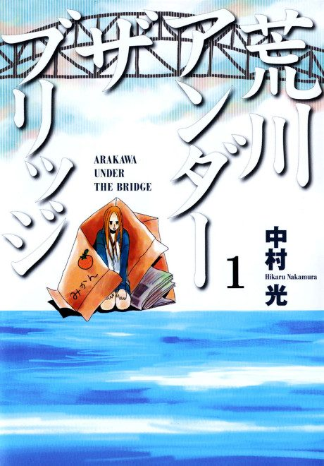

Arakawa Under the Bridge
荒川アンダー ザ ブリッジ
Ko, a rich young man who never owes anyone, has his life saved by a girl who lives under a bridge, and moves in among the strange people who live there.
After the anime, read the manga from Chapter 201.
7.4AniList score
—Animeter, no votes yet
26episodes, 2 seasons
Rate it or report where you stopped
Anime finished. Where does the manga pick up?
Start at Chapter201
Both anime seasons cover the manga up to about chapter 200, so start at chapter 201. The manga is finished at 410 chapters.
More like Arakawa Under the Bridge
 Manga Ch. 867.6
Manga Ch. 867.6
 Unclear8.2
Unclear8.2
 Original7.9
Original7.9
 Unclear8.0
Unclear8.0
 Unclear7.9
Unclear7.9
 Film7.6
Film7.6
 Film8.4
Film8.4
 Manga Ch. 297.4
Manga Ch. 297.4
 Manga Vol. 78.3
Manga Vol. 78.3
 Original8.4
Original8.4
 Original7.4
Original7.4
 Unclear7.6
Unclear7.6